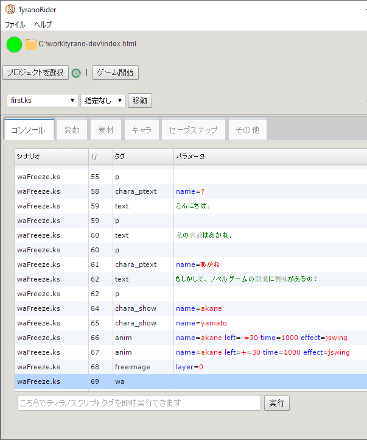

アニメーション待ちのwaタグでフリーズするケース
はじめに
ティラノスクリプト ver471 の話です。
先日、アニメーション中にフリーズすることがあるという話があり、調査しました。
その結果、アニメーション待ちをするwaタグでフリーズしていました。
ティラノスクリプトのanimタグの動作は以下のようになっています。
- アニメーション開始で 現在アニメーションしている数が +1
- アニメーション完了で 現在アニメーションしている数が -1
waタグは「現在アニメーションしている数が 0 になるまで待つ」というタグなのですが、アニメーション完了が呼ばれないケースがあり、現在アニメーションしている数が一生 0 にならないことがあります。
そのため、waタグの待ちがずっと続いてしまい、フリーズしてしまうという現象がおきます。
フリーズした場合、ティラノライダーで確認してもwaコマンド移行が実行されていません。

ケース1
キャラが2人以上表示されており、一人がアニメーションしていなくて、片方がアニメーションしているときに、chara_hide_allをした場合です。
例を下に示します。
[chara_show name="akane" ]
[chara_show name="yamato" ]
[anim name=akane left="-=30" time=1000 effect=jswing]
[anim name=akane left="+=30" time=1000 effect=jswing]
[chara_hide_all time="0"]
[wa]
ケース2
アニメーション中にfreeimageしても同様にフリーズします。
[chara_show name="akane" ]
[anim name=akane left="-=30" time=1000 effect=jswing]
[anim name=akane left="+=30" time=1000 effect=jswing]
[freeimage layer=0]
[wa]
簡単な説明
簡単に言うと、chara_hide_allもfreeimageもアニメーション中の対象を削除します。削除するのでアニメーション完了が呼ばれません(chara_hide_allに関してはもう少し特殊ですが）。
現状とれる対処
chara_hide_allやfreeimageの前でwaを呼び、アニメーション完了を待ってから消す。